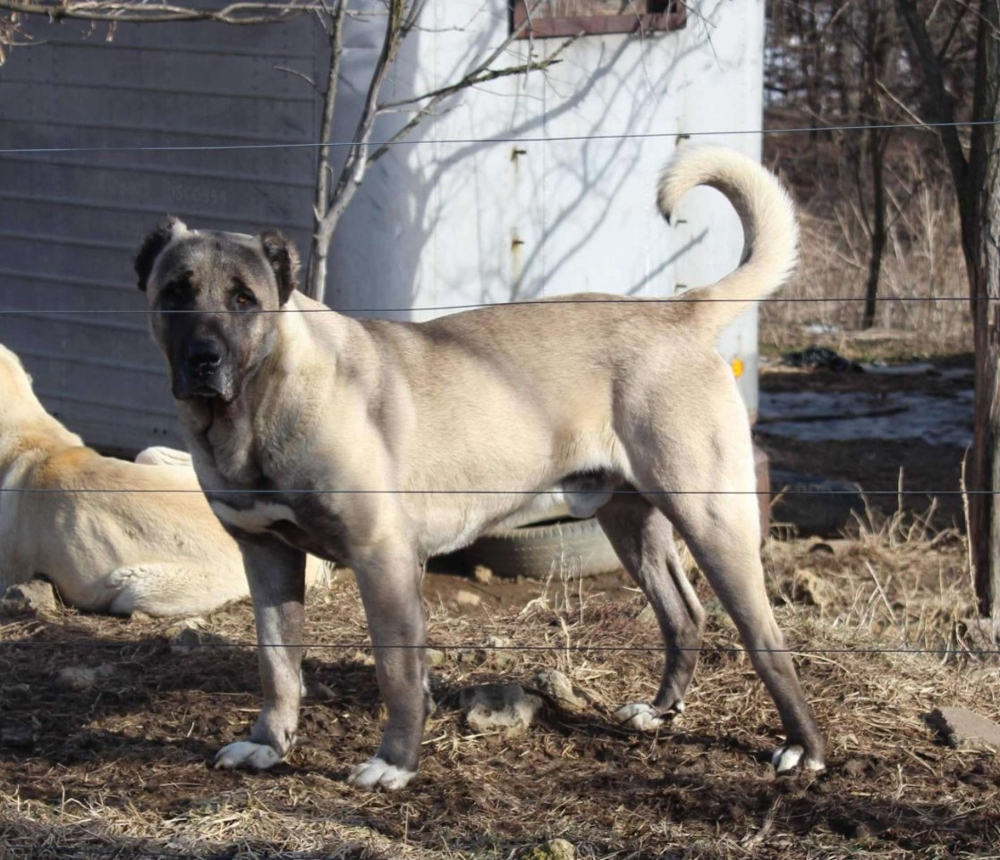

Livestock Guardian
Bred for centuries to live with and protect sheep, goats, and cattle from large predators.

Pure Boz Shepherds Eastern North Carolina
Family-raised Boz Shepherd puppies from documented, 100% pure Turkish bloodlines — bred for working ability, sound temperament, and true-to-standard conformation.
100%
Pure Boz Shepherd bloodline
ARBA
Registered parent dogs
Turkey
Authentic Boz Shepherd lines
About the Breed
The Boz Shepherd — Çoban Köpeği in Turkish — has walked beside shepherds for thousands of years, protecting flocks from wolves and bears across the rugged Boz Shepherd homeland.
They combine the heavy bone of a mastiff with the athleticism of a true working shepherd: powerful, calm at home, and decisive in the field.
What They Do
Every Boz Shepherd we raise comes from proven 100% pure working lines. Whether bound for a farm, a ranch, or a family home, they carry the instincts that have made this breed indispensable in the Boz Shepherd homeland for millennia.
Bred for centuries to live with and protect sheep, goats, and cattle from large predators.
Naturally devoted to their household, gentle with children, and watchful of strangers.
Capable of thinking and acting on their own — a true working partner, not a follower.
Our Bloodline
Tank, Talat, Paige, and Zaina are the parents of Kuma, Ruby, and Nala — the foundation of our pure Boz Shepherd program.

Sire of Ruby & Nala
Sire of Ruby & Nala. The tall, standing white male photographed through the fence — a foundation father behind our program.

Sire of Kuma
Sire of Kuma. The white male resting in the hay with a dirty paw — a calm, classic Boz Shepherd father.

Dam of Ruby & Nala
Dam of Ruby & Nala. The black-and-white mother pictured nursing her litter — steady, maternal, and devoted.

Dam of Kuma
Dam of Kuma. The black-and-white mother standing tall and alert — confident and true to the breed.
Our Program
Our puppies are whelped and raised on the property, socialized with our family and livestock from day one. We breed selectively for temperament, structure, and working ability — and we stay involved long after our puppies go home.
Every parent dog is ARBA registered and carries documented, 100% pure Boz Shepherd bloodlines traced back to Turkey.
Tell us about your farm, your family, and the kind of dog you need. We place puppies one home at a time.